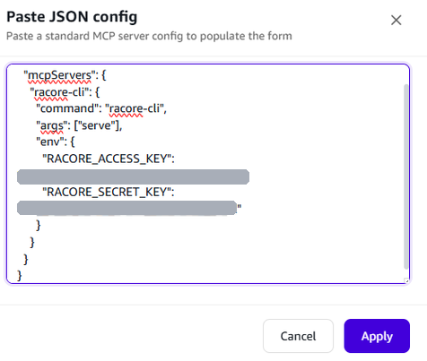

Racore 桌面智能体客户端：本地 stdio 与远程 Streamable HTTP / SSE 的 MCP 服务统一纳管，导入 JSON 即可添加，保存后热重载。查域名、创建加速、看流量账单、收邮件、操作飞书——一句话下达，工具调用与结果全程可见。
管理 Model Context Protocol 服务器
对话即操作——工具调用与结果全程可见
统一接入 Racore 平台的模型，Auto 按任务智能路由
模型提供方频道，统一管理凭证与配额
示例技能 · 可按自己的工作流自定义
让智能体按计划自动执行
空闲时回放会话，沉淀长期记忆与工作习惯
本地 stdio、远程 Streamable HTTP 与 SSE 三种传输统一管理；导入 JSON 即完成添加，保存后热重载，无需重启。
内置 Racore 工具链：查域名、创建加速域名、看流量与账单——对话即操作，工具调用与结果直接呈现。
邮件、飞书、Authentik SSO 等 MCP 服务一键接入，多工具自动编排，一次对话串起多步任务。
整合 AWS CloudFront、Cloudflare 等全球主流 CDN 资源，自研智能调度引擎为每次请求选择最优节点——多云 CDN 的接入、配置、监控与账单，在一个平台完成。
全球 IP 库覆盖率 95%+，主动探测与被动上报结合——故障节点秒级隔离，多节点互为备份。
域名、证书、刷新预热、任务中心与 90 天多维分析——不必再在多个厂商后台之间来回切换。
全链路账单体系覆盖拉取、出账、告警校验与审核发布；流量包相比按量付费最高可省 30%。
Racore Cloud 官方命令行工具：60+ 命令覆盖域名、缓存、统计、证书、工单与日志，原生支持 MCP——一条 racore-cli serve 即可被 Kiro、Amazon Quick Desktop、Claude Desktop 等 AI Agent 直接调用。

60+ 命令覆盖 CDN 全场景：域名、缓存、统计、证书、工单、日志六大命令组，一条命令搞定，AI Agent 同样可直接调用。
racore-cli serve 启动 stdio MCP Server，Kiro、Amazon Quick Desktop、Claude Desktop 等直接调用，附 80+ Agent Skills。
凭证存入系统钥匙串 / Credential Manager，Token 401 自动重试、过期自动刷新；macOS / Linux / Windows 全支持，一条命令安装更新。
把任务交给自主智能体——它们在你的整个代码库中规划、编写并审查代码，而你专注于决策。基于开源 VS Code 构建，配套云平台统一管理模型、套餐与用量。
看着智能体在同一流程中编辑、重构与测试——令牌直接流入编辑器。
同时启动多个智能体——它们彻夜工作，清晨向你汇报。
Agent 可选 Copilot 与 Claude；GPT、Claude、GLM 等模型统一接入，Auto 模式为每个任务路由到合适的模型。
为 AWS 伙伴团队提供架构、迁移与联合销售支持。
基于 Cloudflare 网络的全球交付能力。
20+ 产品：CDN、云托管、对象存储、云安全。
案例覆盖 AIGC、游戏、视频 CDN 与云迁移。
关注本页获取最新动态——也欢迎告诉我们你期待什么。